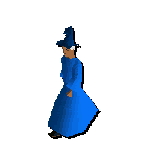

|

Warrior Women
| Height: |
6 ft |
|
| Weight: |
165 lbs |
| Varieties: |
Level 24 |
| Locations: |
Varrock castle |
| Appearance: |
Muscular
|
| Way of Life: |
These women have decided to walk away from the domestic role that their society imposes upon them. Donning heavy armour, they take a stand against an increasingly chaotic world |
| Likes: |
Wielding large weapons |
| Dislikes: |
Over-familiar men |
White Knight
| Height: |
5ft 11in |
 |
| Weight: |
195 lbs |
| Varieties: |
Level 36 |
| Locations: |
The White Knights have a castle in Falador which they call home |
| Appearance: |
Shiny.
The White Knights never go out without buffing their armour first
|
| Way of Life: |
The goody-two-shoes of Runescape. People may respect the White Knights, but nobody really likes them. Yes, they fight the good fight against evil, but do they have to be so mincingly polite? |
| Likes: |
The sense of satisfaction from a job well done |
| Dislikes: |
Dishonesty.
The White Knights believe that they have nothing if they don't have their honour |
White Wolf
| Height: |
Up to 7ft long |
|
| Weight: |
230 lbs |
| Varieties: |
Level 25
Level 38
Level 73 (Big Wolf) |
| Locations: |
In the pass of White Wolf Mountain |
| Appearance: |
Lean and hungry looking, these tenacious beasts must steal themselves against the cold mountain air
|
| Way of Life: |
The wolves patrol the crucial pass in the north. Although of varying strengths, these aggressive animals can be relentless when pack hunting. Like a hazard of nature, white wolves essentially control this passage. So heed these words and pack plenty of provisions- or stay away from White Wolf Mountain |
| Likes: |
The recent rise in tourism through the mountain regions |
| Dislikes: |
Warmer weather, which can make them lethargic |
Witch
| Height: |
5 ft 4in |
|
| Weight: |
150 lbs |
| Varieties: |
Level 25 |
| Locations: |
South Kharid, Draynor Manor |
| Appearance: |
Gnarled fingers and a hooked nose
|
| Way of Life: |
Independent. Witches, although often considered evil, practise a craft which is in many way closer to the Druidic rituals than the minions of Zamorak. Shunned by a mistrustful society, however, these loners sometimes take to summoning up the forces of darkness against their enemies |
| Likes: |
Mixing things in their cauldron. It's all in the sauce |
| Dislikes: |
Most men. Some believe that the male obsession with a woman's appearance has isolated these old spinster women |
Wizard
| Height: |
5 ft 8 in |
 |
| Weight: |
160 lbs |
| Varieties: |
Level9 |
| Locations: |
The Wizard's Tower |
| Appearance: |
Human
|
| Way of Life: |
Legendary. The wizards hold a special place in Runescape's history. But it was their ill-advised alliance with the Dark Wizards that plunged the land into chaos.
And many believe that their mastery of the rune no longer holds the power that it once did |
| Likes: |
A willing apprentice |
| Dislikes: |
The druids. The increasing scarcity of runestones has caused a growing sense of mistrust between these great practitioners of magical arts.
This is a rift which the forces of evil are only too eager to exploit |
| |
|